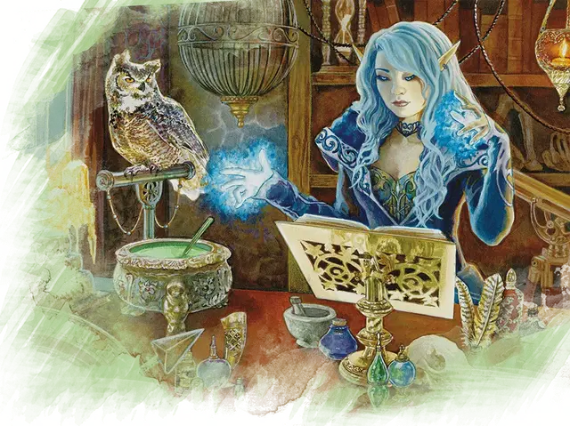

Ритуальный заклинатель
Ritual Caster
Требование: Интеллект или Мудрость 13 или выше

Вы узнали несколько заклинаний, которые можете сотворять как ритуалы. Эти заклинания записаны в ритуальной книге, которую вы должны держать в руке во время их накладывания.
Когда вы выбираете эту черту, вы получаете ритуальную книгу, содержащую два заклинания 1-го уровня по вашему выбору. Выберите один из классов: бард, волшебник, друид, жрец, колдун или чародей.
Вы должны выбирать заклинания из списков для этого класса, но у этих заклинаний должно быть ключевое слово «ритуал». Выбранный класс также определяет базовую характеристику для этих заклинаний: Харизма для барда, колдуна и чародея; Интеллект для волшебника; Мудрость для друида и жреца.
Найдя заклинание, записанное в письменной форме, такой как магический свиток заклинания или книга заклинаний волшебника, вы можете скопировать его в свою ритуальную книгу. Это заклинание должно быть в списке заклинаний выбранного вами класса, уровень его не должен превышать половину вашего уровня (округлённую в большую сторону), и у него должно быть ключевое слово «ритуал». Процесс переписывания занимает по 2 часа за каждый уровень заклинания и стоит по 50 зм за каждый уровень. Это стоимость материальных компонентов, расходуемых в процессе экспериментов с заклинанием, а также особых чернил, которыми оно записывается.